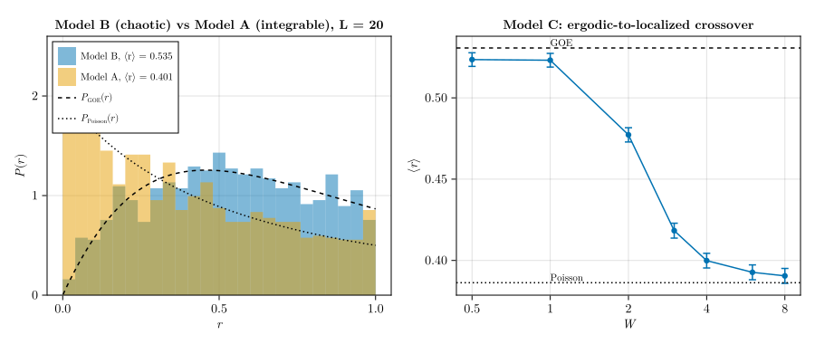

Level statistics as a completeness test for symmetry resolution
Every other check in this documentation asks whether an implemented symmetry is implemented correctly: energies match a Bethe-ansatz value, dimensions match a known count, a reconstructed wavefunction matches a reference. This page asks a different and harder question — whether the set of symmetries you resolved is complete, that is, whether a symmetry you never implemented at all is still lurking inside your "fully resolved" block.
The mechanism is that superposing two or more statistically independent spectra destroys level repulsion and pushes the level statistics toward Poisson. So if you diagonalize a chaotic model in a supposedly irreducible sector and the level-spacing ratio comes out noticeably below the random-matrix value, that is direct evidence of a residual unresolved symmetry: two or more blocks have silently merged.
- Level statistics as a completeness test for symmetry resolution
- Why a dimension count cannot detect this
- The observable
- Models and machinery
- Which symmetries are good in which sector
- Check 0 — Model C, disorder, U(1) only
- Check 2 — the deliberate-failure test
- Check 1 — Model B, fully resolved
- Check 3 — Model A, integrable control
- Check 4 — every sector
- Check 5 — the full distribution
- Where to use this
Why a dimension count cannot detect this
The obvious check on a symmetry decomposition is that the sector dimensions add up. Let us do that first, and see it succeed:
using SymBasis
using LinearAlgebra, SparseArrays, Statistics, Random, Printf
dofo = dof_object(Spin(1 // 2))
L_dim = 8
tot_dim = 0
for k in 0:(L_dim-1), z in (1, -1)
csg = sym(TotalMagnetization(0, L_dim), dofo) ∘
sym(Translational(k, mod1.((1:L_dim) .+ 1, L_dim)), dofo) ∘
sym(SpinInversion(z, L_dim), dofo)
global tot_dim += length(basis(dofo, L_dim, csg).states)
end
@printf("Σ over all (k, z) sectors = %d\nbinomial(%d, %d) = %d\n",
tot_dim, L_dim, L_dim ÷ 2, binomial(L_dim, L_dim ÷ 2))
@assert tot_dim == binomial(L_dim, L_dim ÷ 2)Σ over all (k, z) sectors = 70
binomial(8, 4) = 70The momentum and spin-inversion sectors partition the $S^z = 0$ space exactly. And this tells us nothing at all about whether each block is irreducible: dimensions add up correctly whether or not two independent blocks happen to be sitting inside one of them. That is the gap this page fills.
The observable
For a sorted spectrum $\{E_n\}$ inside a single symmetry sector, take gaps $s_n = E_{n+1} - E_n$ and form the ratio
\[r_n = \frac{\min(s_n, s_{n-1})}{\max(s_n, s_{n-1})} \in [0, 1].\]
The virtue that made Oganesyan and Huse introduce it[Oganesyan_2007] is that $r_n$ is insensitive to the local density of states, so no unfolding is required — which removes the single largest source of methodological error in older level-statistics studies.
The reference values need care, because two sets circulate in the literature and they differ by about 1%:
| ensemble | large-matrix limit (used here) | Wigner-like surmise (not used) |
|---|---|---|
| Poisson (integrable) | $2\ln 2 - 1 = 0.38629$ (exact) | — |
| GOE (chaotic, time-reversal symmetric) | $0.5307$ | $4 - 2\sqrt3 = 0.53590$ |
| GUE (chaotic, no time reversal) | $0.5996$ | $0.60266$ |
For many-body spectra with large sector dimensions the convention is the large-matrix-limit column, and that is what this page uses. The surmise values come from $3\times3$ matrices. Quoting the wrong one shifts every number by about $0.005$, which looks exactly like a subtle bug.
const POISSON = 2 * log(2) - 1
const GOE = 0.5307
const GUE = 0.5996
function r_values(E; trim=0.25, degtol=1e-9)
Es = sort(real(E))
n = length(Es)
Es = Es[(floor(Int, n * trim)+1):ceil(Int, n * (1-trim))] # middle 50%
s = diff(Es)
n_deg = count(<(degtol), s)
rs = [min(s[i], s[i-1]) / max(s[i], s[i-1])
for i in 2:length(s) if max(s[i], s[i-1]) > 0]
return rs, n_deg
end
mean_r(rs) = (mean(rs), std(rs) / sqrt(length(rs)))Two details in there are not cosmetic.
The edges are trimmed to the middle 50% of each spectrum, because the density of states varies far too rapidly near the spectral edges.
Degeneracies are counted, not filtered. A leftover exact degeneracy gives $s = 0$ and hence $r = 0$, which drags $\langle r \rangle$ down and mimics precisely the pathology being hunted. Silently dropping such pairs would hide the evidence, so r_values returns the count and every caller checks it. If exact degeneracies appear inside what should be an irreducible block, that is itself the signal — and it is worth chasing, as the integrable control below demonstrates.
Finally, every number on this page is quoted with its uncertainty. The standard error on $\langle r \rangle$ from $N$ ratios is $\sigma_r/\sqrt{N}$ with $\sigma_r \approx 0.25$, so a sector of $1000$ levels gives about $\pm 0.008$. Do not over-interpret a deviation of $0.005$; do investigate a deviation of $0.05$.
Models and machinery
One builder covers all three models — a list of (distance, J, Δ) couplings plus an optional field, assembled with the recipe from the operator construction page:
function build_chain(L, ba; couplings=((1, 1.0, 0.8),), fields=nothing, T=Float64)
dim = length(ba.states)
I_vec, J_vec, V_vec = Int[], Int[], T[]
for (n, sₙ) in enumerate(ba.states)
Nₙ = ba.norms[n]
diag_val = zero(T)
if fields !== nothing # Σ hᵢ Sᶻᵢ
diag_val += sum(fields[i] * (Int(read(sₙ, i)) - 0.5) for i in 1:L)
end
for (d, J, Δd) in couplings, i in 1:L
j = mod1(i + d, L)
if read(sₙ, i) == read(sₙ, j)
diag_val += Δd * J / 4
continue
end
diag_val -= Δd * J / 4
temp_s = flip(sₙ, [i, j])
rep_s, rep_fac = representative(temp_s, ba)
m = state_index(ba, rep_s)
m === nothing && continue
push!(I_vec, m)
push!(J_vec, n)
push!(V_vec, T(0.5 * J * sqrt(ba.norms[m] / Nₙ) * rep_fac))
end
push!(I_vec, n)
push!(J_vec, n)
push!(V_vec, diag_val)
end
return sparse(I_vec, J_vec, V_vec, dim, dim)
end
spectrum(h) = eigvals(Hermitian(Matrix(h)))The whole spectrum is needed, not a few extremal eigenvalues, so this page uses dense eigvals throughout rather than the Arpack solver used elsewhere in these examples.
- Model A (integrable control):
couplings = ((1, 1.0, Δ),)— the plain XXZ chain. - Model B (chaotic, the actual test):
((1, 1.0, Δ), (2, J₂, Δ₂))— XXZ with next-nearest-neighbor couplings, which breaks integrability. - Model C (disordered):
((1, 1.0, 1.0),)plusfields— the random-field Heisenberg chain.
The same Hamiltonians with OperatorAlgebra.jl
OperatorAlgebra.jl is an optional package whose SymBasis.jl extension activates as soon as both are loaded. It expresses the same operators declaratively, and sparse(H, ba) applies the identical representative-based projection internally, so it reproduces build_chain up to round-off:
using OperatorAlgebra
bond(J, Δd, i, j) = J * (0.5 * (Op(RAISE, i) * Op(LOWER, j) + Op(LOWER, i) * Op(RAISE, j))
+ Δd * Op(SPIN_Z, i) * Op(SPIN_Z, j))
ba_oa = basis(dofo, 12,
sym(TotalMagnetization(0, 12), dofo) ∘
sym(Translational(0, mod1.((1:12) .+ 1, 12)), dofo))
H_oa = sum(bond(1.0, 0.8, i, mod1(i + 1, 12)) for i in 1:12) + # Model B
sum(bond(1.0, 0.8, i, mod1(i + 2, 12)) for i in 1:12)
d_bond = norm(collect(sparse(H_oa, ba_oa)) -
collect(build_chain(12, ba_oa; couplings=((1, 1.0, 0.8), (2, 1.0, 0.8)))))
@assert d_bond < 1e-10
d_bond3.925231146709438e-16ba_oa is a genuine momentum sector rather than a magnetization-only basis, so its normalization factors are not all 1 and the $\sqrt{N_m/N_n}$ projection is exercised on both sides of the comparison.
Model C's disorder term needs one extra care, and it must be built in a magnetization-only basis — a random field breaks translation, so there is no momentum sector to project into:
ba_fld = basis(dofo, 12, sym(TotalMagnetization(0, 12), dofo))
hs = [0.3 * cospi(i / 3) for i in 1:12]
H_fld = sum(bond(1.0, 1.0, i, mod1(i + 1, 12)) for i in 1:12) +
sum(-hs[i] * Op(SPIN_Z, i) for i in 1:12) # note the minus sign
d_fld = norm(collect(sparse(H_fld, ba_fld)) -
collect(build_chain(12, ba_fld; couplings=((1, 1.0, 1.0),), fields=hs)))
@assert d_fld < 1e-10
d_fld6.540311493867724e-15SPIN_Z is [1/2 0; 0 -1/2] and the extension reads matrix index 1 as digit 0, but Spin(1//2) has ldof = (-1//2, 1//2), so digit 0 is spin down. The two conventions are exactly opposite:
ba_one = basis(dofo, 2, sym(TotalMagnetization(0, 2), dofo))
s_one = ba_one.states[1]
d_one = Int(read(s_one, 1))
(; digit=d_one, Sᶻ=dofo.ldof[d_one+1],
Op_SPIN_Z=real(sparse(Op(SPIN_Z, 1), ba_one)[1, 1]))(digit = 1, Sᶻ = 1//2, Op_SPIN_Z = -0.5)Inside a two-site $S^zS^z$ product the sign appears twice and cancels, which is why the bond Hamiltonian above needs no correction. A single-site term is not protected: dropping the minus sign in H_fld flips the sign of every field and changes the physics without raising any error.
Which symmetries are good in which sector
This is where the test can most easily be sabotaged before it starts, and where SymBasis answers the question directly. Reflection maps $k \to -k$, so it is not a symmetry within a single momentum block except where $k$ and $-k$ coincide. Rather than asserting that rule, we can simply ask is_commutative:
L_c = 8
P_perm = 1:L_c |> reverse |> collect
@printf("%4s %26s\n", "k", "T(k) ∘ P commutative?")
for k in 0:(L_c-1)
csg = sym(TotalMagnetization(0, L_c), dofo) ∘
sym(Translational(k, mod1.((1:L_c) .+ 1, L_c)), dofo) ∘
sym(SpatialReflection(1, P_perm), dofo)
@printf("%4d %26s\n", k, is_commutative(basis(dofo, L_c, csg)))
end k T(k) ∘ P commutative?
0 true
1 false
2 false
3 false
4 true
5 false
6 false
7 falseThe library says true at $k = 0$ and $k = L/2$ (that is, $k = \pi$) and false everywhere else, which is exactly the textbook rule. Spin inversion, by contrast, commutes with translation at every $k$. So the sector structure is:
reflection_allowed(k, L) = k == 0 || 2k == L
function sector_basis(L, k, z; p=0)
csg = sym(TotalMagnetization(0, L), dofo) ∘
sym(Translational(k, mod1.((1:L) .+ 1, L)), dofo) ∘
sym(SpinInversion(z, L), dofo)
p == 0 || (csg = csg ∘ sym(SpatialReflection(p, 1:L |> reverse |> collect), dofo))
return basis(dofo, L, csg)
end
function sector_list(L) # k and -k have identical spectra, so sweep k = 0 … L/2
out = NamedTuple{(:k, :p, :z),Tuple{Int,Int,Int}}[]
for k in 0:(L÷2), z in (1, -1)
if reflection_allowed(k, L)
push!(out, (; k, p=1, z))
push!(out, (; k, p=-1, z))
else
push!(out, (; k, p=0, z))
end
end
return out
end
function sector_spectrum(L, s; couplings)
ba = sector_basis(L, s.k, s.z; p=s.p)
isempty(ba.states) && return Float64[], 0
T = reflection_allowed(s.k, L) ? Float64 : ComplexF64
return spectrum(build_chain(L, ba; couplings=couplings, T=T)), length(ba.states)
endTwo further constraints on the model parameters, both of which would look like bugs if ignored:
- Spin inversion needs $S^z = 0$.
SpinInversionenforces this internally — itssymmethod enumerates only configurations with vanishing total magnetization — so composing it withTotalMagnetization(0, L)is redundant, but kept above for readability. - Avoid $\Delta = 1$. At the isotropic point SU(2) symmetry produces exact multiplet degeneracies across $S^z$ sectors. Either resolve total $S$, or stay off $\Delta = 1$; this page does the latter.
The $k \neq 0, \pi$ blocks are genuinely complex Hermitian, which invites the guess that they should follow GUE. They do not. Reflection composed with complex conjugation is an antiunitary symmetry that maps a single $k$ block to itself and squares to $+1$, so these sectors are GOE like all the others. Expecting $0.5996$ here and finding $0.53$ would look exactly like a broken projection.
Check 0 — Model C, disorder, U(1) only
Start where the symmetry machinery is not involved at all. The random-field Heisenberg chain[Luitz_2015]
\[\hat{H} = \sum_i \vec{S}_i \cdot \vec{S}_{i+1} + \sum_i h_i \hat{S}^z_i, \qquad h_i \sim \mathcal{U}[-W, W]\]
has disorder that breaks translation, reflection and SU(2), leaving only the U(1) magnetization. Resolution is therefore trivially complete, which isolates the $r$ machinery — edge trimming, averaging, degeneracy counting — from everything else. It should give GOE at small $W$ and cross over to Poisson at large $W$.
function model_c(L, W, nreal; seed=1234)
rng = MersenneTwister(seed)
ba = basis(dofo, L, sym(TotalMagnetization(0, L), dofo))
all_r, n_deg = Float64[], 0
for _ in 1:nreal
h = build_chain(L, ba; couplings=((1, 1.0, 1.0),),
fields=W .* (2 .* rand(rng, L) .- 1))
rs, nd = r_values(spectrum(h))
append!(all_r, rs) # r computed WITHIN a realization, then pooled
n_deg += nd
end
m, e = mean_r(all_r)
return (; W, mean=m, err=e, n=length(all_r), n_deg, dim=length(ba.states))
end
Ws = (0.5, 1.0, 2.0, 3.0, 4.0, 6.0, 8.0)
c_res = [model_c(12, W, 8) for W in Ws]
@printf("%6s %8s %10s %8s %6s\n", "W", "<r>", "±", "N", "deg")
for c in c_res
@printf("%6.1f %8.4f %10.4f %8d %6d\n", c.W, c.mean, c.err, c.n, c.n_deg)
@assert c.n_deg == 0
end
@printf("\nGOE = %.4f, Poisson = %.5f\n", GOE, POISSON)
@assert abs(c_res[1].mean - GOE) < 0.02
@assert abs(c_res[end].mean - POISSON) < 0.02 W <r> ± N deg
0.5 0.5236 0.0042 3680 0
1.0 0.5232 0.0042 3680 0
2.0 0.4773 0.0044 3680 0
3.0 0.4183 0.0046 3680 0
4.0 0.3999 0.0045 3680 0
6.0 0.3927 0.0046 3680 0
8.0 0.3905 0.0046 3680 0
GOE = 0.5307, Poisson = 0.38629Note the ordering inside model_c: $r$ is computed within each disorder realization and only then pooled. Pooling spectra from different realizations before computing $r$ would superpose independent spectra — which is the very pathology this page is about, and would push the answer toward Poisson regardless of $W$.
Check 2 — the deliberate-failure test
Before trusting the diagnostic as evidence about real bugs, calibrate how sensitive it actually is at these system sizes. Take a chaotic model in properly resolved sectors and then deliberately merge blocks that ought to be independent:
Δ_xxz = 0.8
MODEL_B = ((1, 1.0, Δ_xxz), (2, 1.0, Δ_xxz))
MODEL_A = ((1, 1.0, Δ_xxz),)
L_m = 16
mE_0pp, _ = sector_spectrum(L_m, (; k=0, p=1, z=1); couplings=MODEL_B)
mE_0mp, _ = sector_spectrum(L_m, (; k=0, p=-1, z=1); couplings=MODEL_B)
mE_0pm, _ = sector_spectrum(L_m, (; k=0, p=1, z=-1); couplings=MODEL_B)
mE_k1, _ = sector_spectrum(L_m, (; k=1, p=0, z=1); couplings=MODEL_B)
mE_k2, _ = sector_spectrum(L_m, (; k=2, p=0, z=1); couplings=MODEL_B)
@printf("%-38s %7s %18s\n", "", "N", "<r>")
for (label, E) in (
("resolved k=0, p=+1, z=+1", mE_0pp),
("resolved k=0, p=-1, z=+1", mE_0mp),
("resolved k=1, z=+1", mE_k1),
("MERGED p=+1 ∪ p=-1", vcat(mE_0pp, mE_0mp)),
("MERGED z=+1 ∪ z=-1", vcat(mE_0pp, mE_0pm)),
("MERGED k=1 ∪ k=2", vcat(mE_k1, mE_k2)),
)
rs, _ = r_values(E)
m, e = mean_r(rs)
@printf("%-38s %7d %.4f ± %.4f\n", label, length(rs), m, e)
end N <r>
resolved k=0, p=+1, z=+1 127 0.5119 ± 0.0220
resolved k=0, p=-1, z=+1 78 0.5411 ± 0.0329
resolved k=1, z=+1 194 0.5496 ± 0.0181
MERGED p=+1 ∪ p=-1 207 0.4485 ± 0.0196
MERGED z=+1 ∪ z=-1 218 0.4367 ± 0.0191
MERGED k=1 ∪ k=2 401 0.4491 ± 0.0139Merging any two blocks collapses $\langle r \rangle$ from the GOE value to around $0.445$ — a shift of roughly $0.085$, which is four to six standard errors and about $60\%$ of the way to Poisson. That is the sensitivity of the diagnostic at these sector sizes, and it is what licenses the interpretation of the next section.
The inference runs in both directions, which is the reason to do this check at all. If merging two blocks had not moved $\langle r \rangle$, then those two "blocks" were never independent spectra in the first place — meaning the projection was wrong.
Check 1 — Model B, fully resolved
Now the actual test. Model B is the XXZ chain with next-nearest-neighbor couplings,
\[\hat{H} = \sum_i \left( S^x_i S^x_{i+1} + S^y_i S^y_{i+1} + \Delta S^z_i S^z_{i+1} \right) + J_2 \sum_i \left( S^x_i S^x_{i+2} + S^y_i S^y_{i+2} + \Delta_2 S^z_i S^z_{i+2} \right),\]
with $\Delta = \Delta_2 = 0.8$ and $J_2 = 1$. The $J_2$ term destroys integrability, so a fully resolved sector should be GOE[Poilblanc_1993].
ba20 = sector_basis(20, 0, 1; p=1) # built once, reused for Model A below
EB = spectrum(build_chain(20, ba20; couplings=MODEL_B))
rB, degB = r_values(EB)
mB, eB = mean_r(rB)
@printf("L = 20, k = 0, p = +1, z = +1\n")
@printf(" sector dimension = %d\n ratios used = %d\n",
length(ba20.states), length(rB))
@printf(" exact degeneracies= %d\n", degB)
@printf(" <r> = %.4f ± %.4f (GOE = %.4f)\n", mB, eB, GOE)
@assert degB == 0
@assert abs(mB - GOE) < 0.02L = 20, k = 0, p = +1, z = +1
sector dimension = 2518
ratios used = 1258
exact degeneracies= 0
<r> = 0.5345 ± 0.0072 (GOE = 0.5307)This is the completeness statement: within the resolution of the test, the four symmetries resolved here — magnetization, translation, reflection and spin inversion — exhaust the symmetries of Model B in this sector. Had a fifth been lurking, $\langle r \rangle$ would have sat near the $0.445$ measured above.
The reading, following Santos and Rigol[Santos_2010], is: | measured $\langle r \rangle$ | conclusion | |:–-|:–-| | $\approx 0.5307$ | resolution is complete, as far as this test can tell | | $0.39$ – $0.52$ | almost certainly a residual unresolved symmetry, or sectors pooled somewhere | | $\approx 0.386$ | a superposition of many independent spectra — the projection is probably not being applied at all | | $> 0.54$ | suspect the analysis, not the physics: levels dropped, degeneracies over-filtered, edges trimmed asymmetrically |
Check 3 — Model A, integrable control
Same machinery with $J_2 = 0$. The plain XXZ chain is Bethe-ansatz integrable, so it should give Poisson:
EA = spectrum(build_chain(20, ba20; couplings=MODEL_A)) # same sector, J₂ = 0
rA, degA = r_values(EA)
mA, eA = mean_r(rA)
@printf("L = 20, k = 0, p = +1, z = +1, J₂ = 0\n")
@printf(" ratios used = %d\n exact degeneracies= %d\n", length(rA), degA)
@printf(" <r> = %.4f ± %.4f (Poisson = %.5f)\n", mA, eA, POISSON)
@assert degA == 0
@assert abs(mA - POISSON) < 0.03L = 20, k = 0, p = +1, z = +1, J₂ = 0
ratios used = 1258
exact degeneracies= 0
<r> = 0.4009 ± 0.0081 (Poisson = 0.38629)This confirms the pipeline is not manufacturing artificial level repulsion — by dropping levels, say, or trimming asymmetrically. But note carefully what it does not show: an integrable model gives Poisson statistics whether or not the resolution is complete, since incomplete resolution also produces Poisson. Model A alone therefore proves nothing about completeness. All the diagnostic power lives in Model B.
An aside: when the degeneracy counter earns its keep
The choice $\Delta = 0.8$ above is not arbitrary. Running the same fully resolved sector across a range of anisotropies, and counting exact degeneracies rather than filtering them:
ba_deg = sector_basis(16, 0, 1; p=1)
@printf("%10s %10s %8s %8s %10s\n", "Δ", "γ/π", "levels", "deg", "<r>")
for Δd in (0.0, 0.3, 0.5, 1 / sqrt(2), 0.8, 0.9)
E_d = spectrum(build_chain(16, ba_deg; couplings=((1, 1.0, Δd),)))
rs_d, nd_d = r_values(E_d)
@printf("%10.4f %10.4f %8d %8d %10.4f\n",
Δd, acos(Δd) / pi, length(rs_d), nd_d, mean(rs_d))
end Δ γ/π levels deg <r>
0.0000 0.5000 127 76 0.2402
0.3000 0.4030 127 0 0.4180
0.5000 0.3333 127 8 0.3551
0.7071 0.2500 127 0 0.3443
0.8000 0.2048 127 0 0.3888
0.9000 0.1436 127 0 0.3648Both anisotropies that carry exact degeneracies here, $\Delta = 0$ and $\Delta = 0.5$, are root-of-unity points, where $\gamma/\pi = 1/2$ and $1/3$ are rational. At such points the XXZ chain acquires an additional $sl_2$ loop-algebra symmetry[Deguchi_2001] beyond the translation, reflection, magnetization and spin inversion resolved here, producing exactly the kind of unresolved-symmetry degeneracy this page is about. ($\Delta = 0$ is also the free-fermion point, so its degeneracies have an elementary explanation as well.) Even at $L = 16$ the $\Delta = 0.5$ sector carries eight exactly degenerate pairs and its $\langle r \rangle$ falls to $0.346$ — below Poisson; by $L = 20$ the same sector carries 150 of them.
The converse does not hold sector by sector: $\Delta = 1/\sqrt2$ is a root of unity too ($\gamma/\pi = 1/4$) yet shows no degeneracies at this $L$, because whether the extra multiplets land inside a given sector depends on the chain length and on the order of the root. The practical rule is simply to check, not to predict.
This is worth dwelling on, because it is the whole argument for counting rather than filtering. A pipeline that silently dropped zero gaps would have reported a plausible-looking number here and quietly hidden a real extra symmetry of the model. The degeneracy counter is what turned an invisible wrong answer into a visible one — and the fix was to move to $\Delta = 0.8$, where $\gamma/\pi$ is irrational and no such degeneracies exist.
Check 4 — every sector
A single sector agreeing with GOE is suggestive; every sector agreeing independently is the real result, and it is far more informative, because a single outlier localizes the problem to that sector's projection. Sweeping every sector of $L = 16$ (using the $k \leftrightarrow -k$ spectral equivalence to halve the work):
L_sweep = 16
sweep_rows = map(sector_list(L_sweep)) do s
E, dim = sector_spectrum(L_sweep, s; couplings=MODEL_B)
rs, nd = r_values(E)
m, e = mean_r(rs)
(; s.k, s.p, s.z, dim, n=length(rs), mean=m, err=e, n_deg=nd)
end
@printf("%4s %4s %4s %8s %8s %18s\n", "k", "p", "z", "dim", "N", "<r>")
for row in sweep_rows
@printf("%4d %+4d %+4d %8d %8d %.4f ± %.4f%s\n",
row.k, row.p, row.z, row.dim, row.n, row.mean, row.err,
row.n_deg > 0 ? " DEGENERACIES: $(row.n_deg)" : "")
end k p z dim N <r>
0 +1 +1 257 127 0.5119 ± 0.0220
0 -1 +1 158 78 0.5411 ± 0.0329
0 +1 -1 183 91 0.5070 ± 0.0253
0 -1 -1 212 104 0.5776 ± 0.0250
1 +0 +1 392 194 0.5496 ± 0.0181
1 +0 -1 408 202 0.5211 ± 0.0186
2 +0 +1 411 205 0.5181 ± 0.0175
2 +0 -1 397 197 0.5428 ± 0.0176
3 +0 +1 392 194 0.5133 ± 0.0194
3 +0 -1 408 202 0.5174 ± 0.0176
4 +0 +1 413 205 0.5255 ± 0.0175
4 +0 -1 396 196 0.5232 ± 0.0188
5 +0 +1 392 194 0.5565 ± 0.0171
5 +0 -1 408 202 0.5354 ± 0.0177
6 +0 +1 411 205 0.5244 ± 0.0175
6 +0 -1 397 197 0.5371 ± 0.0198
7 +0 +1 392 194 0.5234 ± 0.0191
7 +0 -1 408 202 0.5136 ± 0.0187
8 +1 +1 239 119 0.5030 ± 0.0238
8 -1 +1 175 87 0.4944 ± 0.0282
8 +1 -1 166 82 0.5254 ± 0.0287
8 -1 -1 230 114 0.4894 ± 0.0238sweep_means = [row.mean for row in sweep_rows]
worst = maximum(abs.(sweep_means .- GOE))
@printf("sectors swept : %d\n", length(sweep_rows))
@printf("mean over sectors : %.4f (GOE = %.4f)\n", mean(sweep_means), GOE)
@printf("spread : %.4f … %.4f\n", minimum(sweep_means), maximum(sweep_means))
@printf("worst deviation : %.4f\n", worst)
@printf("typical stat. error : %.4f\n", mean(row.err for row in sweep_rows))
@assert all(row -> row.n_deg == 0, sweep_rows)
@assert abs(mean(sweep_means) - GOE) < 0.015
@assert worst < 0.08sectors swept : 22
mean over sectors : 0.5250 (GOE = 0.5307)
spread : 0.4894 … 0.5776
worst deviation : 0.0469
typical stat. error : 0.0211Every sector lands on GOE within a couple of standard errors, and the mean over sectors sits within $0.006$ of $0.5307$. The worst single-sector deviation is about $0.047$, against a typical statistical error of $0.021$ and the $0.085$ gap to the merged-block value measured in Check 2 — so the scatter is sampling noise in the smaller $k = 0$ and $k = \pi$ sectors, not a signal.
These sectors hold between about 80 and 200 levels each, well short of the thousand or so at which the per-sector estimate becomes sharp, which is why the scatter is this wide; the $L = 20$ result above is the precise one. What the sweep buys instead is coverage — it is the step that would localize a broken projection to a single sector, and no aggregate number can do that. The dimensions also close exactly once the $k \leftrightarrow -k$ partners are counted:
swept_dim = sum(row.dim for row in sweep_rows)
paired_dim = sum(row.dim for row in sweep_rows if !reflection_allowed(row.k, L_sweep))
@printf("swept + mirrored = %d, binomial(%d, %d) = %d\n",
swept_dim + paired_dim, L_sweep, L_sweep ÷ 2, binomial(L_sweep, L_sweep ÷ 2))
@assert swept_dim + paired_dim == binomial(L_sweep, L_sweep ÷ 2)swept + mirrored = 12870, binomial(16, 8) = 12870Check 5 — the full distribution
Two different pathologies can produce the same $\langle r \rangle$ while giving visibly different distributions, so the mean is worth backing up with the shape. The surmise of Atas et al.[Atas_2013] is
\[P_\beta(r) = \frac{1}{Z_\beta} \frac{(r + r^2)^\beta}{(1 + r + r^2)^{1 + 3\beta/2}},\]
with $\beta = 1$ for GOE, against $P(r) = 2/(1+r)^2$ for Poisson. Rather than hardcoding $Z_\beta$ — the normalization constants are easy to misremember, and the curve is meaningless if it is wrong — we integrate for it:
using QuadGK
P_surmise(r, β) = (r + r^2)^β / (1 + r + r^2)^(1 + 3β / 2) /
quadgk(x -> (x + x^2)^β / (1 + x + x^2)^(1 + 3β / 2), 0, 1)[1]
P_poisson(r) = 2 / (1 + r)^2
@printf("∫₀¹ P₁ dr = %.12f\n∫₀¹ P_Poisson dr = %.12f\n",
quadgk(r -> P_surmise(r, 1), 0, 1)[1], quadgk(P_poisson, 0, 1)[1])∫₀¹ P₁ dr = 1.000000000000
∫₀¹ P_Poisson dr = 1.000000000000using CairoMakie
fig = Figure(size=(900, 380))
ax1 = Axis(fig[1, 1]; xlabel=L"r", ylabel=L"P(r)",
title="Model B (chaotic) vs Model A (integrable), L = 20")
hist!(ax1, rB; bins=range(0, 1, length=26), normalization=:pdf,
color=(Makie.wong_colors()[1], 0.5), label="Model B, ⟨r⟩ = $(round(mB, digits=3))")
hist!(ax1, rA; bins=range(0, 1, length=26), normalization=:pdf,
color=(Makie.wong_colors()[2], 0.5), label="Model A, ⟨r⟩ = $(round(mA, digits=3))")
lines!(ax1, 0.001:0.001:1, r -> P_surmise(r, 1); color=:black, linestyle=:dash,
label=L"P_{\mathrm{GOE}}(r)")
lines!(ax1, 0.001:0.001:1, P_poisson; color=:black, linestyle=:dot,
label=L"P_{\mathrm{Poisson}}(r)")
ylims!(ax1, 0, 2.6)
axislegend(ax1; position=:lt, labelsize=11)
ax2 = Axis(fig[1, 2]; xlabel=L"W", ylabel=L"\langle r \rangle", xscale=log10,
xticks=([0.5, 1.0, 2.0, 4.0, 8.0], ["0.5", "1", "2", "4", "8"]),
title="Model C: ergodic-to-localized crossover")
errorbars!(ax2, [c.W for c in c_res], [c.mean for c in c_res], [c.err for c in c_res];
whiskerwidth=8)
scatterlines!(ax2, [c.W for c in c_res], [c.mean for c in c_res]; color=Cycled(1))
hlines!(ax2, [GOE]; color=:black, linestyle=:dash)
hlines!(ax2, [POISSON]; color=:black, linestyle=:dot)
text!(ax2, 1.0, GOE; text="GOE", align=(:left, :bottom), fontsize=11)
text!(ax2, 1.0, POISSON; text="Poisson", align=(:left, :bottom), fontsize=11)
fig
The left panel shows the two mechanisms directly: Model B follows the GOE curve, vanishing linearly as $r \to 0$ because nearby levels repel, while Model A follows the Poisson curve, which is maximal at $r = 0$ because uncorrelated levels are free to nearly coincide. The right panel is the standard many-body-localization crossover — the same $r$ machinery, with no nontrivial symmetry resolution involved anywhere.
Where to use this
Run this test last, as a closing check on a symmetry implementation. It is the only check in this documentation that can detect a symmetry you never implemented, and its cost is one dense diagonalization per sector. If a sector comes back between $0.39$ and $0.52$ for a model you believe is chaotic, the most likely explanation is an unresolved symmetry rather than marginal chaoticity — raise $J_2$ and see whether the number moves toward $0.5307$; if it plateaus below, go hunting.
- Oganesyan_2007V. Oganesyan and D. A. Huse, Localization of interacting fermions at high temperature, Phys. Rev. B 75, 155111 (2007).
- Atas_2013Y. Y. Atas, E. Bogomolny, O. Giraud, and G. Roux, Distribution of the ratio of consecutive level spacings in random matrix ensembles, Phys. Rev. Lett. 110, 084101 (2013).
- Poilblanc_1993D. Poilblanc, T. Ziman, J. Bellissard, F. Mila, and G. Montambaux, Poisson vs. GOE statistics in integrable and non-integrable quantum Hamiltonians, Europhys. Lett. 22, 537 (1993).
- Santos_2010L. F. Santos and M. Rigol, Onset of quantum chaos in one-dimensional bosonic and fermionic systems and its relation to thermalization, Phys. Rev. E 81, 036206 (2010).
- Luitz_2015D. J. Luitz, N. Laflorencie, and F. Alet, Many-body localization edge in the random-field Heisenberg chain, Phys. Rev. B 91, 081103(R) (2015).
- Deguchi_2001T. Deguchi, K. Fabricius, and B. M. McCoy, The sl₂ loop algebra symmetry of the six-vertex model at roots of unity, J. Stat. Phys. 102, 701 (2001).